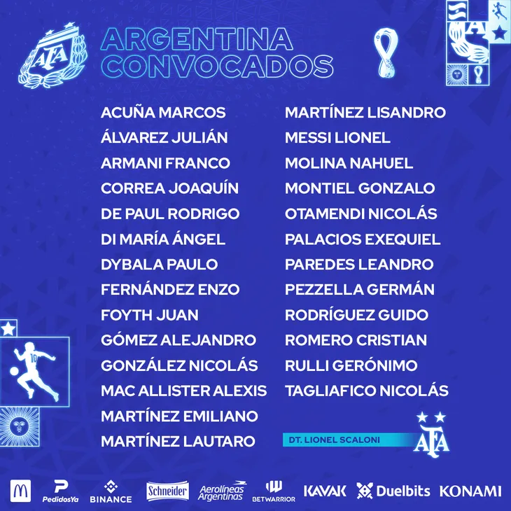

El 11 tan esperado, ya presentado.
La lista que se dio a conocer de los que vestirían la camiseta de la selección Argentina. Los 11 principales que saltarían a disputar los partidos en Catar 2022 serian: Emiliano Martínez;Romero Cristian;Nicolás Otamendi;Nahuel Molina;Marcos Acuña;Alejandro Gómez; Leandro Paredes; Rodrigo De Paul; Anegl Di María; Lionél Messi; Lautaro Martínez. fue la formación que se presento en fase de grupos, una vez ya organizado el equipo quedo de la siguiente forma: Emiliano Martínez; Cristian Romero;Nicolás Otamendi;Lisandro Martínez; Nahuel Molina; Marcos Acuña;Enzo Fernández;Alexis Mac Allister;Rodrigo De Paul;Lionél Messi;Julián Álvarez.
